01 — The Idea
Wikipedia as a network, a text corpus, and a mirror of politics
Wikipedia is more than an encyclopaedia — it is a graph. Every politician's article links to colleagues, rivals, mentors, and successors. Taken together, those links form a network that quietly encodes the structure of American political life.
We treat each US politician as a node, and each mutual cross-link between two of their Wikipedia pages as an edge. Then we read the articles themselves. The result is a dataset that lets us ask three parallel questions:
- A Who is connected? — what does the link structure look like, and does it sort itself by party, region, or era?
- B What do they say? — how does language in the articles differ across communities and parties?
- C Can you trust Wikipedia to learn about politics? — is the coverage genuinely neutral, or does it quietly favour one side, one gender, one type of politician over another?
Wikipedia is increasingly the first place people turn during elections, debates, and breaking news. If its coverage of politicians is systematically biased, that matters at scale. If it is genuinely balanced, that is worth knowing too. We use sentiment scoring and vocabulary analysis across 6,138 articles to give a data-driven answer.
The deepest question is whether the network and the text agree. If communities found purely from link structure also show up as distinct vocabularies when you read the articles, then Wikipedia encodes the same political groupings twice — once in its graph, once in its words.
02 — The Data
From Wikidata to a clean corpus
We assembled the dataset in two passes. First, we used the Wikidata SPARQL endpoint to find the most cross-wiki-covered US politicians as seeds. Then we walked the Wikipedia link graph outward from those seeds to capture their connections — and stripped every article down to its meaningful body text.
Pipeline
- SPARQL seed query — rank politicians by number of Wikipedia language editions covering them (a proxy for global notability). Filters: must be human, occupation politician, held a US political office, born before 1990, career not ended before 1980. Top 1,000 become seeds.
- Link walk — seed pages — follow internal links from each seed's English Wikipedia page and keep politicians who pass the same filters. Dataset grows to 3,776 politicians.
- Link walk — neighbour pages — repeat on the newly discovered neighbours. Dataset grows to 6,625 politicians.
- Extract information — fetch metadata from Wikidata: position, career dates, nationality, birth & death dates, party, gender, education, state, and Wikipedia URL.
- Clean & deduplicate — keep the most prestigious position per politician, simplify party labels to Democrat / Republican / Other, estimate career spans, remove anyone whose career ended before 1980. Final count: 6,138 politicians.
Only mutual links are counted as edges — both articles must link to each other. This filters one-way name-drops and retains only genuine bidirectional connections, producing a cleaner picture of real political relationships.
Composition
Party breakdown of the 6,138 politicians in the dataset.
03 — The Network
A few hubs, a very long tail
Each node is a politician. Each edge connects two whose Wikipedia pages mutually link to each other. The first thing the graph reveals is structural inequality: most politicians have almost no connections, while a handful have hundreds or thousands.
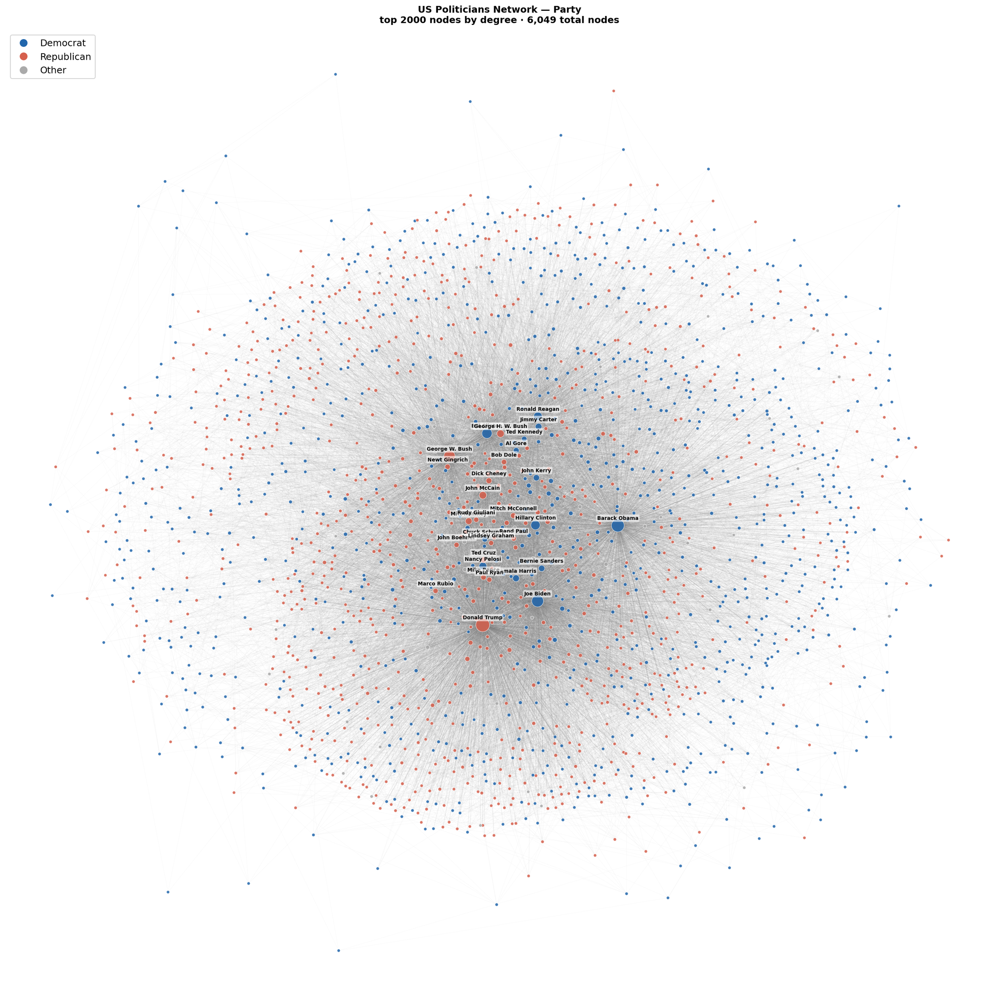
Scale-free structure
The median politician has just 5 connections. The most-linked has around 1,000. The average is pulled up to 11 by a small number of extreme hubs. This gap — mean far above median — is the signature of a power-law distribution, which the CCDF plot below confirms with an exponent γ = 1.39.
The mechanism is preferential attachment: being well-referenced makes you more likely to be referenced again. Presidents and long-serving leaders accumulate links over decades; local officials accumulate almost none. The contrast with a random network of identical size is stark — in a random graph everyone is roughly equally connected.
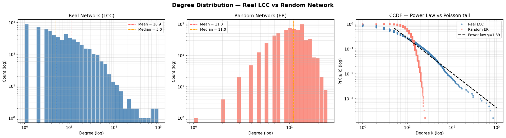
Party is the strongest predictor of who links to whom
Beyond structure, we can ask whether politicians preferentially link to others like themselves. The assortativity coefficient measures this: positive means similar politicians cluster together, near-zero means the attribute is unrelated to link structure.
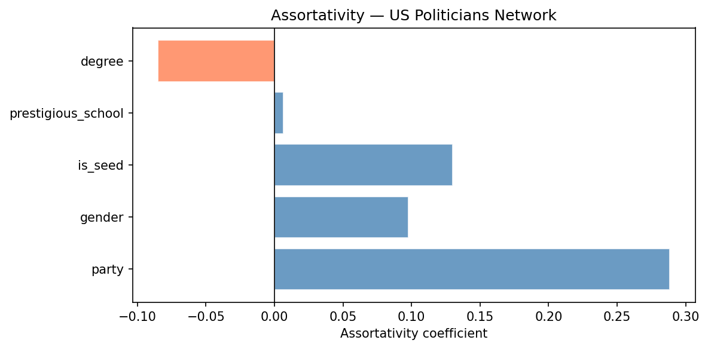
Wikipedia's links are written by thousands of independent editors with no coordination, yet the resulting graph still sorts itself substantially along party lines. But is this pattern genuine, or could it arise simply from the network's degree distribution? To test this, we rewired the network 100 times using a double edge swap model — randomly shuffling edges while preserving each politician's exact number of connections — and compared the observed assortativity against the resulting null distribution.
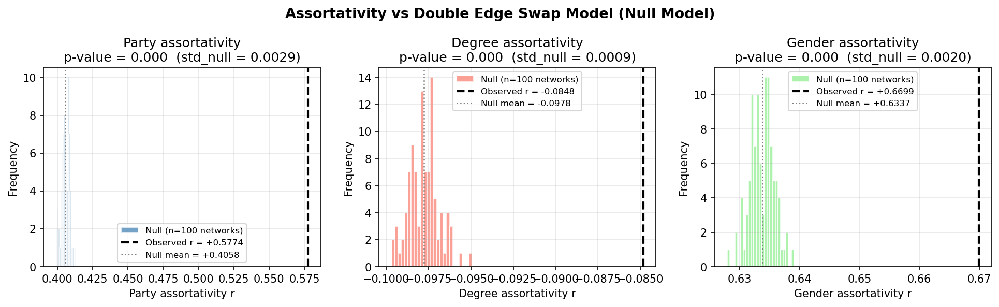
Influence compounds at the top
Having many connections is one measure of importance. Two others reveal something different: eigenvector centrality asks whether your connections are themselves well-connected, and closeness centrality measures how quickly you can reach every other politician in the network.
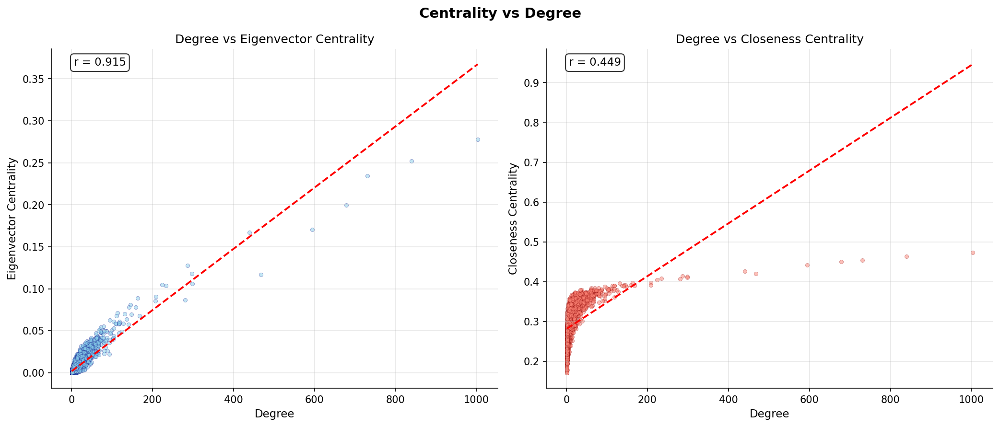
With the network structure established, the next question is what the articles themselves say — and whether Wikipedia's coverage is as balanced as its reputation suggests.
04 — The Text
Is Wikipedia a reliable source for learning about politics?
For every politician we extracted their full Wikipedia article — intro, career, positions, controversies — and stripped out boilerplate footer sections (References, See also, External links, Bibliography …). The result is a clean corpus of about 56 million characters. We then asked: does Wikipedia treat politicians fairly?
Wikipedia leans positive — but not partisan
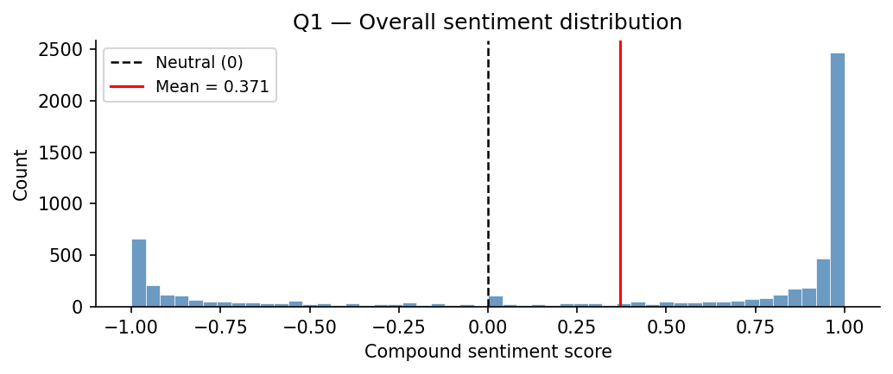
So Wikipedia is not neutral in tone — it is gently positive about politicians on average. That raises the obvious follow-up: is the positivity spread evenly, or do some groups get warmer treatment than others?
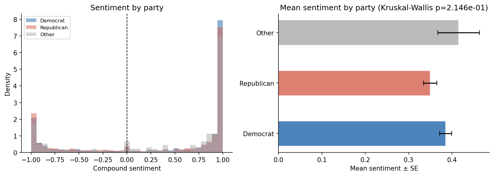
Gender tells a slightly different story: articles about female politicians are marginally more positive than those about male politicians, and the difference is statistically significant (Mann–Whitney p = 0.002) — though the effect size is small. More strikingly, seniority predicts sentiment: Vice Presidents and US Senators receive markedly warmer coverage than local officials and staff, regardless of party.
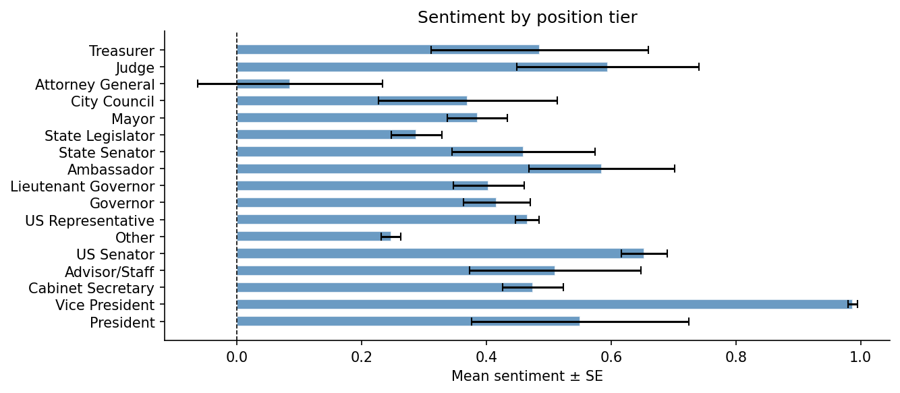
The vocabulary is different even when the sentiment is the same
Sentiment scores measure tone. Vocabulary analysis measures content. Even though parties receive similar sentiment scores, the words used to describe them are detectably different — and they mirror each party's real-world policy priorities.
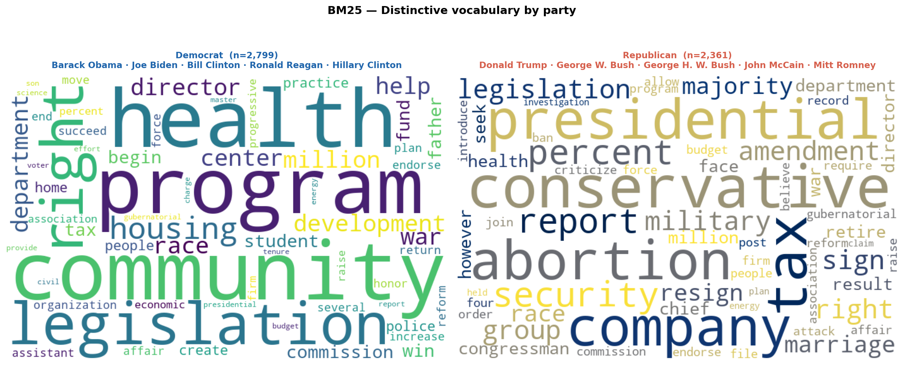
How we prepared the text
We used the MediaWiki extracts API with explaintext=1 to get clean
plaintext — no HTML, no infoboxes, no tables, no citation markers. Section markers
(== Section ==) were preserved so we could strip boilerplate footer sections
(References, See also, External links …) along with their subsections.
For vocabulary analysis we tokenise: preserving capitalisation for POS tagging (so “Obama” is correctly identified as a proper noun and dropped), then lowercasing, removing stopwords, and lemmatising with WordNet. A multi-word-expression detector keeps collocations like supreme court and vice president intact. Scoring uses BM25 rather than plain TF–IDF, which handles the large variation in article length — a president's article can be 25× longer than a local official's.
So far we have looked at the network and the text separately. The real test is whether they tell the same story — do the communities the algorithm finds from links alone also show up as distinct vocabularies when you read the articles? That is what the next section examines.
05 — Communities
Not party blocs — geography and era
We ran a community detection algorithm that sees only the link structure — no party labels, no state data, no dates. The result is surprising: the communities it finds are not neat Democrat and Republican blocs. They are shaped more by where politicians operated and when than by ideology.
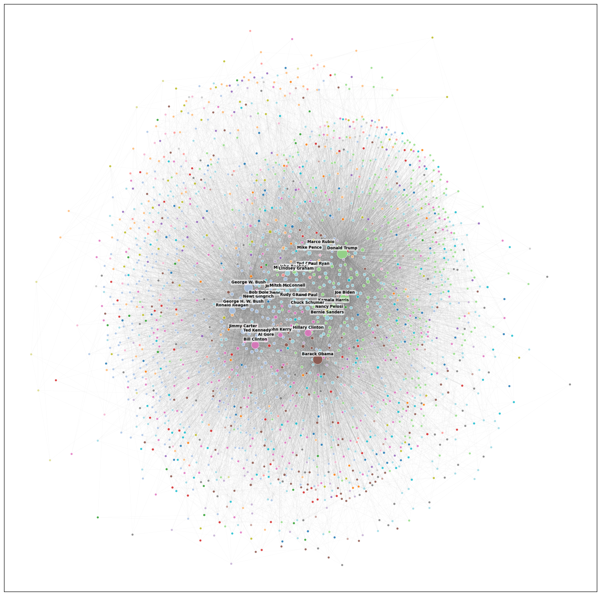
The median community is only 56% one party
Just 4 of the 33 communities are more than 70% one-sided. So while party predicts individual links (as the assortativity results showed), it does not cleanly carve up the network into red and blue blocs. Two other forces dominate:
- 1 National prominence. The three largest communities are dominated by presidents, vice presidents and national figures — George W. Bush, Bill Clinton and Reagan in one; McCain, Romney and Harris in another; Trump, Biden and Pelosi in a third. These clusters are party-mixed, because national politicians of both parties reference each other constantly in the context of shared events, opposition, and conflict.
- 2 State and regional politics. The smaller communities are strikingly geographic: a New York City cluster (Giuliani, Bloomberg, Cuomo), an Illinois cluster (Obama, Jesse Jackson, Durbin), a New Jersey cluster (Christie, Corzine, Menendez), an Alaska cluster (Palin, Stevens, Young). Politicians who governed the same place link to each other regardless of party.
This is the network answer. Now the question is whether the text gives the same answer independently.
The vocabulary confirms what the links suggest
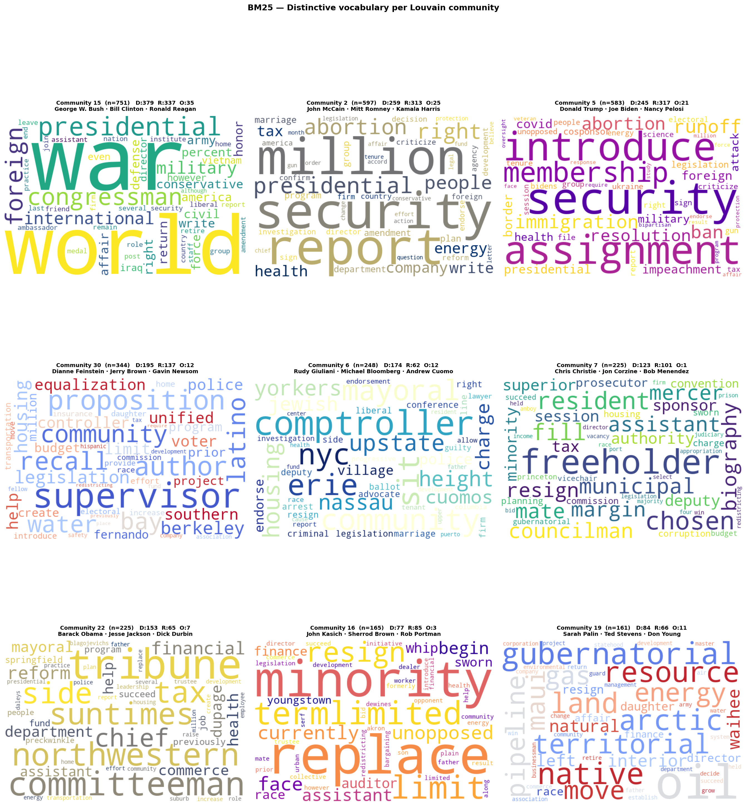
The network and the text tell the same story: Wikipedia's communities are organised by shared context — where you governed, when you governed, and what events you were involved in — not by political alignment. That is a meaningful result about how political knowledge is structured in an encyclopaedia written by thousands of independent editors.
06 — Findings
Six answers to six questions
We started with six research questions. Here is what we found — one answer each, with the evidence that supports it.
1. Yes — politicians cluster strongly
The Louvain algorithm finds 33 communities from the link structure alone. The largest has 753 members; the smallest meaningful ones have around 150. The average distance between any two politicians in the network is just 3.54 hops — a small-world property that means information (and influence) can spread remarkably quickly through the graph.
2. Partly — communities reflect geography and era more than party
Party predicts individual links (assortativity +0.29) but does not cleanly determine community membership. The median community is only 56% one party. The stronger organising forces are national prominence (presidents and party leaders cluster together regardless of affiliation) and geography (state-level politicians cluster by where they governed).
3. Yes — central nodes are connected to other central nodes
Eigenvector centrality and degree correlate at r = 0.915. The biggest hubs are almost exclusively connected to other big hubs. Influence in the Wikipedia co-citation network compounds at the top and is self-reinforcing — the same small group of presidents and party leaders that dominate the degree distribution also dominate every other centrality measure.
4. Yes — vocabulary aligns with network communities
The BM25 text analysis was run without any knowledge of the link structure — it only saw article words. Yet it independently produces the same groupings: Alaska vocabulary in the Alaska cluster, Cold War vocabulary in the presidential era cluster, California vocabulary in the California cluster. The network and the text encode the same political geography twice.
5. Partly — Wikipedia is positive but not partisan
Wikipedia is not neutral in tone — the average sentiment score is +0.37, meaning politicians are described more positively than negatively overall. But the positivity is applied evenly: no significant difference between Democrat and Republican coverage (p = 0.21). Where differences appear, they track seniority rather than party — Vice Presidents and Senators receive warmer coverage than local officials, regardless of affiliation.
6. Cautiously yes — Wikipedia is a reasonable political source
On the most important criterion — partisan balance — Wikipedia passes. Neither party is systematically favoured in tone. The vocabulary differences between parties reflect genuine policy differences rather than editorial bias. The main caveats: article quality varies enormously by prominence, the positive overall tone means Wikipedia is not a neutral observer, and the language each party uses to describe itself is faithfully reproduced rather than independently assessed.
07 — Downloads
Play with the data
Everything we built is downloadable. The small files live on GitHub; the larger ones are hosted externally because they exceed GitHub's per-file size limit.
If you want to reproduce the network analysis, start with
politicians_with_communities.csv — it has the full graph structure,
metadata, and community assignments in one file.
If you want to run your own text analysis — topic modelling,
a different sentiment tool, embeddings — use tokenized_wikipage.csv
for pre-processed tokens or politicians_full_text.csv for raw article text.
08 — Behind the scenes
The explainer notebook
The website is the story. The notebook is the workings. It walks through every decision — data cleaning, tokenisation choices, network metrics, statistical tests, model selection — accompanied by all the code written and used to produce these results.